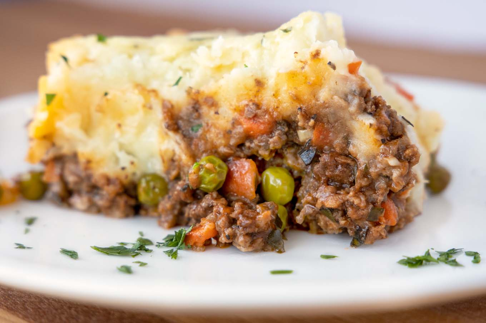

Traditional Irish Shepherd's Pie
Traditional Irish Shepherd's Pie

This is a traditional irish shepherd's pie recipe that my sister sent me. I still haven't had a chance to make this version yet. I'll update this page with any tips, tricks, or comments I've learned.
I also used a picture from another site. Once I make it myself, I'll change out the picture.
Ingredients
- 1 tablespoon olive oil
- 3/4 teaspoon salt
- 1 lb ground beef or 1 lb lamb
- 1 large onion, finely diced
- 3 -4 large carrots, finely diced
- 1 cup frozen peas and corn (optional)
- 3 -4 sprigs fresh thyme, finely chopped
- 2 tablespoons flour
- 1 tablespoon butter
- 1 glass red wine
- 2 tablespoons tomato paste
- 2 tablespoons Worcestershire sauce
- 1 cup chicken stock
- 1 large quantity mashed potatoes (I use two large russet potatoes)
- 1 egg, beaten
- grated parmesan cheese
Steps
- Pre-heat oven to 200C/400°F.
- Saute carrots in the olive oil until starting to get tender.
- Add in the onions and saute for a minute or two then add the meat.
- Season with black pepper and thyme.
- Cook until browned then drain fat.
- Add the butter and peas.
- Sprinkle with flour and stir through.
- Add tomato paste, wine and Worcestershire sauce.
- Let this reduce slightly then add the chicken stock. Allow to reduce down until you have a thick meaty gravy. Season to your taste.
- Remove from heat. Grease an oven proof dish** (9x13 works for me, as does an oval baker) with butter and add the sauce.
- Spoon or pipe the mashed potatoes over top. Brush with egg and sprinkle with Parmesan cheese if using.
- Bake for about 20 minutes or until the potato is nice and browned on top.
- Serve as is or with some crusty bread to mop up that yummy sauce!